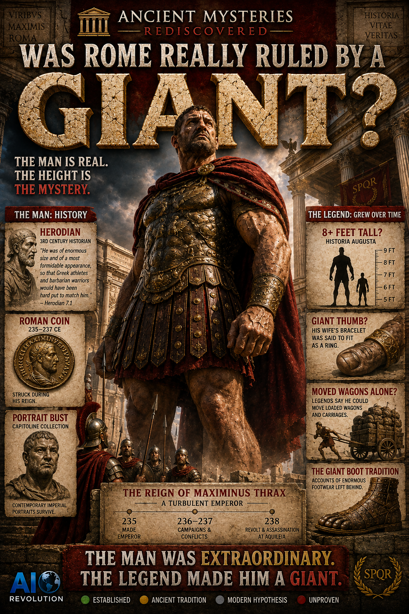

235 CE
Made emperor
The army abandons Alexander Severus and proclaims Maximinus.
Ancient Mysteries Rediscovered · Investigation
Maximinus Thrax was a real Roman emperor. Ancient writers remembered him as exceptionally large and powerful. But the farther the story traveled, the bigger the giant became.
The mystery is not whether Maximinus existed. He unquestionably did.
The question is how unusually large the real emperor was—and how much later Roman storytelling enlarged him. The strongest early witness remembers an extraordinary soldier. A later biography supplies exact giant height, impossible feats, an enormous thumb, and a famous boot.
This is not a debunking. It is an investigation into how a remarkable human being became a Roman folk giant.
Maximinus Thrax was Roman emperor from 235 to 238 CE. Herodian places him within the army of Alexander Severus, training recruits and winning their loyalty. When the troops turned against Alexander in 235, they proclaimed Maximinus emperor.
His rise, reign, campaigns, political enemies, and death belong to history—not to the giant legend.
The army abandons Alexander Severus and proclaims Maximinus.
Military operations on the northern frontier are followed by revolt and civil war.
His Italian campaign stalls; his own troops kill Maximinus and his son.
Before the eight-foot stories, there was already an unusually large man.
Herodian, writing close to the events, says Maximinus entered the cavalry because of his size and strength. He later describes the emperor's body as huge and his appearance as frightening, comparing his physical formidability with trained Greek athletes and accomplished non-Roman warriors.
Size and strength were part of Maximinus's military identity. Herodian also credits him with personal bravery and direct participation in fighting. But he gives us no secure exact height.
An exceptionally large, physically powerful soldier whose body and battlefield reputation mattered to his rise. It does not give us a ruler marked eight feet, eight and a half feet, or any other precise number.
The two literary layers do not tell the story at the same scale. Read them side by side and the transformation becomes visible.
The strongest early testimony already gives us an extraordinary man. The later source turns him into something closer to a Roman folk giant.
The extreme-height claim comes from the Historia Augusta, a later and notoriously problematic collection.
The work gives a spectacular measurement, but Herodian does not. Ancient units, manuscript transmission, biographical exaggeration, and the source's appetite for marvels make false precision especially dangerous here.
We do not know Maximinus's actual height.
UnprovenThese claims are worth preserving because they show how Romans remembered Maximinus. They should not be promoted from later storytelling into verified history.
The later biography credits Maximinus with moving heavily loaded vehicles. No independent material evidence verifies the feat.
Later traditionThe story says his wife's bracelet could fit around his thumb like a ring—an unforgettable detail, but not a measurement we can confirm.
Later traditionDestructive strength belongs to the biography's cluster of marvels. It documents reputation, not a witnessed modern test.
Later traditionStories of repeated contests place him beside legendary strongmen. The narrative shape matters more than the scorecard.
Later traditionThe Historia Augusta says an enormous royal boot became a curiosity near Aquileia. The story survives; the object does not.
Later traditionSurviving portrait types represent Maximinus with emphatic facial structure, a prominent jaw, close-cropped military styling, and the hard visual language of a soldier-emperor. They show how imperial Rome chose to represent him.
Portraiture is evidence of official likeness and visual identity. It is not a measuring stick. It cannot establish his height, and facial form alone cannot diagnose acromegaly or gigantism.
Visual shown: approved investigation artwork. Follow the museum sources below for surviving ancient portrait evidence.
Established material evidence: portrait Unproven: diagnosis from portraitCoins struck during the reign anchor the investigation in 235–238 CE.
They carry Maximinus's name, titles, and imperial portrait. They are contemporary physical evidence that the emperor and his public identity belonged to the Roman world—not to a later legend.
They do not record his height. A profile on metal can establish imperial representation, not bodily measurement.
EstablishedA modern medical-historical paper has proposed hereditary acromegalic gigantism in Maximinus's family as a possible explanation for ancient descriptions. The proposal draws attention to reported size, strength, and portrait features.
That is a hypothesis—not a diagnosis. Ancient descriptions can be compatible with a condition without proving it. Portraits are stylized representations, later stories are unreliable clinical records, and we do not have physical remains available that could establish a modern diagnosis.
Possible compatibility with ancient descriptions does not equal medical certainty.
Herodian describes Germanic opponents retreating into forest and marsh terrain. Maximinus personally rides into deep water, joins the fighting, and draws the army after him.
Strong ancient testimonyThe impossible shield-breaking image magnifies that martial reputation into historical epic. It expresses the legend; it is not reenactment proof.
Artistic exaggerationReel = experience the legend. Investigation = question the legend. The distinction lets the cinematic image become more meaningful, not less.
During the revolt of 238, Maximinus marched into Italy. Aquileia closed its gates. The campaign stalled, supplies failed, and the besieging army began to suffer from hunger and despair.
Soldiers near his tent resolved to end the siege by killing Maximinus. When he emerged with his son, they killed them both.
The later tradition could make him superhuman. History still gave him a human ending.
Established historical eventMaximinus existed
EstablishedEmperor from 235 to 238 CE
EstablishedRose through the Roman military
Strong / establishedAncient writers considered him unusually large
Strong ancient testimonySize and strength were part of his reputation
Strong ancient testimonyExactly eight-plus feet tall
UnprovenMoved loaded wagons alone
Later ancient traditionGiant thumb / bracelet ring
Later ancient traditionGiant boot preserved as a curiosity
Later ancient traditionHad gigantism or acromegaly
Modern hypothesisPortrait proves gigantism
UnprovenWe know his actual height
NoRome was ruled by an extraordinarily large man
Very defensibleThe strongest early testimony suggests Maximinus really was remembered as an unusually large and physically formidable man.
But the exact eight-foot height, superhuman feats, giant thumb, wagon stories, and giant-footwear tradition belong to later and less secure storytelling.
We can defend the extraordinary man. We cannot measure the giant.
Perhaps the greatest clue is not that Rome invented Maximinus's size. It is that every generation found a reason to make him bigger.
Sometimes memory creates the biggest giants.

The Reel is the cinematic doorway: an enormous emperor, a marsh battle, and the legend at full scale. This page is the case file that asks what history can support.
Watch the Reel on FacebookCinematic reconstruction. Open the investigation above for the full source analysis.
We do not know his actual height. The extreme measurement belongs to the later Historia Augusta tradition, not Herodian's earlier account.
Yes. He ruled from 235 to 238 CE and is documented by literary testimony, coins, inscriptions, and portraiture.
Herodian associates him with remarkable size, strength, military prowess, and a formidable appearance. The account does not supply a secure exact height.
Some researchers have proposed hereditary acromegalic gigantism as a possible explanation. Without physical remains suitable for diagnosis, it remains a hypothesis.
It is a later collection known for invented documents, suspect details, and extravagant biography. Its Maximinus stories are evidence for the tradition, not automatic proof of measurements or feats.
Herodian says Maximinus entered military life because of size and strength, describes his body as huge, and depicts him as personally courageous in battle—but gives no secure exact height.
Early literary witness
Later ancient tradition
Objects and portraiture
Modern medical hypothesis